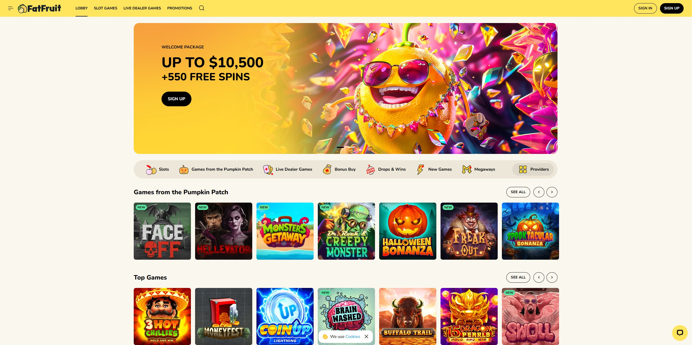
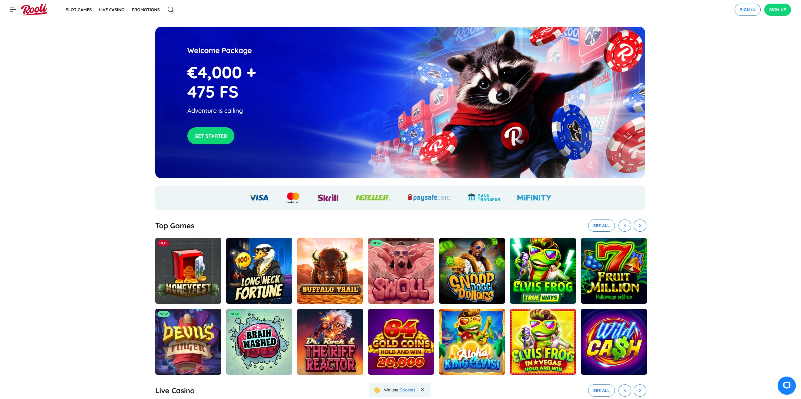
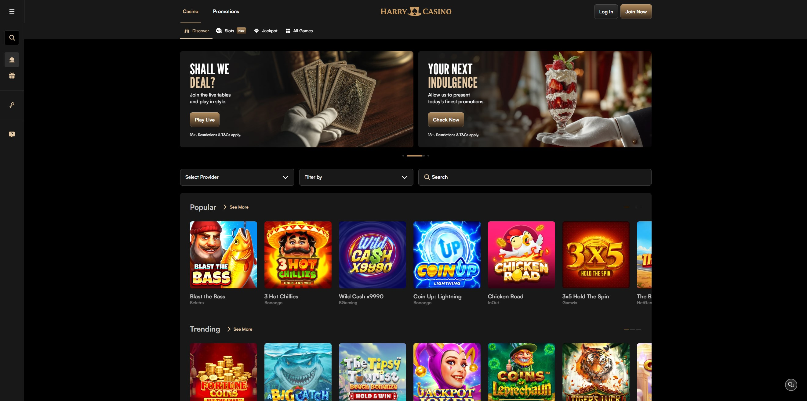

Top Canadian Online Casinos This Year
| Rank | Casino Name | Established | Payment Methods | Rating |
|---|---|---|---|---|
| 1 | The Clubhouse Casino | 2021 | Cards, Crypto, Interac | 5.0/5 |
| 2 | Croco Slots | 2020 | Cards, Crypto, Interac | 4.2/5 |
| 3 | FatFruit Casino | 2022 | Cards, Crypto, eWallets | 4.2/5 |
| 4 | Spin Fever | 2023 | Cards, Crypto, Interac | 4.3/5 |
| 5 | Rooli Casino | 2021 | Cards, Crypto, Interac | 4.4/5 |
| 6 | Harry's Casino | 2019 | Cards, Crypto, eWallets | 4.2/5 |
1. The Clubhouse Casino – Best Overall Online Casino in Canada

| Established | 2021 |
| License | Curaçao eGaming |
| Headquarters | Curaçao |
| Welcome Bonus & Promo Code | 100% Welcome Bonus up to $500 + 100 Free Spins |
| Number of Casino Games | 3,000+ |
| Payment Methods | Credit Cards, Crypto, Bank Transfers, eWallets, Interac |
| Customer Support | Live Chat: 24/7 Email: Available FAQ: ✅ Help Center: ✅ |
| Mobile App Available | No, but the site is mobile-optimized |
Kicking off our list of the best online casinos in Canada is The Clubhouse Casino. Backed by Dama N.V., this gambling site launched in 2021 and holds a Curaçao licence, promising safe and fair online play. What lands this casino at the very top of our list is its impressive selection of over 3,000 real money casino games.
The Clubhouse Casino offers every style of casino game conceivable, from classic slots and progressive jackpots to live dealer games and table games. The site features a smooth, modern interface that makes navigation effortless, whether you're on desktop or mobile. Quick withdrawals are consistently praised by users, with many reporting fast processing times.
The promotions at The Clubhouse Casino are worth exploring. New players have access to a generous welcome offer that includes both bonus funds and free spins. If you're a regular on the site, ongoing offers like reload bonuses, cashback deals, and seasonal promotions keep the excitement going.
What The Clubhouse Casino does well
- Offers 3,000+ casino games from top providers
- Smooth interface optimized for desktop and mobile
- Quick withdrawal processing times
- Strong bonus structure for new and regular players
What The Clubhouse Casino could do better
- Some terms & conditions can be complex
- Could expand payment method options
- VIP program details could be clearer
2. Croco Slots – Best for Game Variety

| Established | 2020 |
| License | Curaçao eGaming |
| Headquarters | Curaçao |
| Welcome Bonus & Promo Code | 200% Welcome Bonus up to $2,000 + 100 Free Spins |
| Number of Casino Games | 6,000+ |
| Payment Methods | Credit Cards, Crypto (Bitcoin, Ethereum, Litecoin), eWallets, Interac |
| Customer Support | Live Chat: 24/7 Email: support@crocoslots.com FAQ: ✅ Help Center: ✅ |
| Mobile App Available | No, but the site is mobile-optimized |
Second on our list is Croco Slots, a powerhouse in the Canadian online casino market with over 6,000 games. This casino supports CAD currency and multiple cryptocurrencies, making it incredibly flexible for Canadian players. The massive game library includes slots, table games, live dealer options, and specialty games from top providers.
Croco Slots stands out for its rapid withdrawal processing times, with many users reporting payouts within 12 hours. The site's intuitive interface makes it easy to navigate through thousands of games, and the search functionality helps you find exactly what you're looking for. The welcome bonus is generous, and the ongoing promotions keep regular players engaged.
Canadian players will appreciate the full CAD support, eliminating currency conversion fees. The crypto payment options provide additional privacy and speed for those who prefer digital currencies. With round-the-clock customer support and a comprehensive FAQ section, help is always available when you need it.
What Croco Slots does well
- Massive library of 6,000+ casino games
- Rapid withdrawals (often within 12 hours)
- Full CAD and cryptocurrency support
- Generous welcome bonus and ongoing promotions
What Croco Slots could do better
- Bonus terms can be complex to navigate
- Could improve user interface organization
- Wagering requirements could be more competitive
3. FatFruit Casino – Best for Welcome Bonuses
| Established | 2022 |
| License | Curaçao eGaming |
| Headquarters | Curaçao |
| Welcome Bonus & Promo Code | 300% Welcome Bonus up to $1,500 + 150 Free Spins |
| Number of Casino Games | 5,000+ |
| Payment Methods | Credit Cards, Crypto, Bank Transfers, eWallets |
| Customer Support | Live Chat: 24/7 Email: support@fatfruit.com FAQ: ✅ Help Center: ✅ |
| Mobile App Available | No, but the site is mobile-optimized |
Coming in at number three is FatFruit Casino, featuring a vibrant, eye-catching design and over 5,000 games. What really sets FatFruit apart is its generous welcome offer for Canadian players, making it an excellent choice for those looking to maximize their starting bankroll.
FatFruit Casino excels in providing a diverse gaming experience with titles from leading software providers. The site supports both cryptocurrency and traditional fiat payment methods, giving players flexibility in how they fund their accounts. The mobile-friendly layout ensures you can enjoy your favorite games on the go without sacrificing quality or functionality.
The casino's promotional calendar is packed with exciting offers, from daily bonuses to weekend specials. Canadian players benefit from dedicated support and banking options tailored to their needs. The vibrant theme and user-friendly navigation make it easy to explore the extensive game library.
What FatFruit Casino does well
- Exceptional welcome bonus package
- 5,000+ games from top providers
- Good crypto and fiat payment support
- Vibrant, modern design and interface
What FatFruit Casino could do better
- Higher deposit minimums than some competitors
- Mobile optimization could be improved
- Bonus terms require careful reading
4. Spin Fever – Best for Cryptocurrency Players

| Established | 2023 |
| License | Curaçao eGaming |
| Headquarters | Curaçao |
| Welcome Bonus & Promo Code | 100% Welcome Bonus up to $1,000 + 250 Free Spins |
| Number of Casino Games | 10,000+ |
| Payment Methods | Credit Cards, Crypto (Bitcoin, Ethereum, Litecoin, Dogecoin), eWallets, Interac |
| Customer Support | Live Chat: 24/7 Email: support@spinfever.com FAQ: ✅ Help Center: ✅ |
| Mobile App Available | No, but the site is mobile-optimized |
Fourth on our list is Spin Fever, a relatively new casino that launched in 2023 but has already made waves with its impressive collection of over 10,000 games. This casino is particularly appealing to cryptocurrency enthusiasts, offering extensive crypto banking options alongside traditional payment methods.
Spin Fever boasts a high safety index in independent reviews, providing peace of mind for Canadian players. The massive game selection covers every category imaginable, from classic slots to cutting-edge live dealer games. The crypto-friendly approach means faster transactions and enhanced privacy for those who prefer digital currencies.
The platform's modern design and robust search features make navigating the extensive game library a breeze. Canadian players benefit from dedicated support and banking options that cater specifically to their needs. The welcome bonus is competitive, though players should review the terms carefully to understand wagering requirements.
What Spin Fever does well
- Massive library of 10,000+ games
- Excellent cryptocurrency support
- High safety index in reviews
- Modern, user-friendly interface
What Spin Fever could do better
- High wagering requirements (45× within 7 days)
- VIP/loyalty program could be clearer
- Newer casino with less track record
5. Rooli Casino – Best for Fast Withdrawals
| Established | 2021 |
| License | Curaçao eGaming |
| Headquarters | Curaçao |
| Welcome Bonus & Promo Code | 150% Welcome Bonus up to $800 + 200 Free Spins |
| Number of Casino Games | 6,000+ |
| Payment Methods | Credit Cards, Crypto, Interac, eWallets, Bank Transfers |
| Customer Support | Live Chat: 24/7 Email: support@rooli.com FAQ: ✅ Help Center: ✅ |
| Mobile App Available | No, but the site is mobile-optimized |
At number five, we have Rooli Casino, which stands out primarily for its lightning-fast withdrawal processing. Many users report same-day withdrawals, making it an excellent choice for Canadian players who value quick access to their winnings. With over 6,000 games, Rooli offers a comprehensive gaming experience.
Rooli Casino's strong Canadian support is evident in its banking options. The casino accepts CAD currency, eliminating conversion fees, and supports multiple payment methods including Interac – a favorite among Canadian players. The combination of crypto and traditional payment options provides maximum flexibility for depositing and withdrawing funds.
The mobile-optimized platform ensures you can play your favorite games anywhere, anytime. The casino's game library is well-organized, making it easy to find exactly what you're looking for. Regular promotions and a solid loyalty program keep players engaged and rewarded for their continued play.
What Rooli Casino does well
- Same-day withdrawals for many players
- 6,000+ high-quality casino games
- Strong Canadian banking support (Interac, CAD)
- Excellent mobile optimization
What Rooli Casino could do better
- Higher minimum withdrawal limits for some methods
- Could expand game provider selection
- Welcome bonus could be more competitive
6. Harry's Casino – Best for High Rollers
| Established | 2019 |
| License | Curaçao eGaming |
| Headquarters | Curaçao |
| Welcome Bonus & Promo Code | 650% Welcome Bonus spread over three deposits (up to $6,500 total) |
| Number of Casino Games | 2,000+ |
| Payment Methods | Credit Cards, Crypto, eWallets, Bank Transfers |
| Customer Support | Live Chat: 24/7 Email: support@harryscasino.com FAQ: ✅ Help Center: ✅ |
| Mobile App Available | No, but the site is mobile-optimized |
Rounding out our list at number six is Harry's Casino, featuring an impressive welcome bonus package that totals 650% across your first three deposits. This makes it particularly attractive for high rollers and players looking to maximize their initial bankroll. The casino offers over 2,000 games from reputable software providers.
Harry's Casino has been operating since 2019, giving it a solid track record in the online gambling industry. The game variety covers all major categories including slots, table games, video poker, and live dealer options. The multi-deposit bonus structure allows players to claim rewards gradually, spreading the value across multiple sessions.
While the bonus potential is significant, it's important for players to carefully review the terms and conditions, including wagering requirements and withdrawal policies. The casino provides 24/7 customer support to help answer any questions about bonuses, games, or account management.
What Harry's Casino does well
- Exceptional 650% multi-deposit bonus package
- 2,000+ games with good variety
- Established presence since 2019
- 24/7 customer support available
What Harry's Casino could do better
- Terms and conditions require careful review
- Mixed user feedback on support quality
- Smaller game library compared to competitors
How We Picked These Casinos
We look at:
- Licence & reputation — we only include casinos licensed for Canadian players or operating offshore under recognised licence.
- Withdrawal speed & banking options — fast payouts and Canadian-friendly payment methods matter.
- Game selection — a wide library of slots, table games and live dealer options.
- Bonus terms & fairness — we scrutinise wagering requirements, max cash-out limits and transparency.
How to Choose the Right Online Casino
Here's what you should check before you sign up:
- Licence & Reputation: Check for a valid regulatory licence.
- Banking: Can you deposit/withdraw in CAD? Are local methods supported (e.g., Interac)?
- Game Variety: Do you have your favourite games (slots, blackjack, live dealer)?
- Bonus Fairness: Wagering requirements, expiry, max win limits — these matter.
- Customer Support & Trust: Responsive support and transparent terms reduce risk.
Legality and Regulation of Online Casinos in Canada
One of the biggest questions Canadian players ask is: "Is online gambling legal in Canada?"
The short answer: Yes, with some important distinctions.
How Online Gambling Laws Work in Canada
In Canada, gambling laws are handled at both the federal and provincial levels. While the federal Criminal Code prohibits unlicensed gambling operations based in Canada, it does not prevent Canadians from playing at licensed offshore casinos.
That means players can legally enjoy real-money casino games on sites licensed by reputable international regulators such as:
- Curaçao eGaming Authority, which is common for international casinos accepting Canadian players.
- Kahnawake Gaming Commission, a respected regulator based in Quebec that licenses both domestic and offshore operators.
- Malta Gaming Authority (MGA), known for strict player protection and fair play standards.
Ontario's Regulated Market
Ontario operates its own regulated framework through iGaming Ontario (iGO), which licenses operators for play within the province.
If you live outside Ontario, you're free to play on offshore casinos that accept Canadians, as long as they are properly licensed and use secure payment and data protection systems.
💡 Tip: Always check a casino's licence at the footer of its homepage. Look for active seals from Curaçao eGaming, Kahnawake Gaming Commission, or iGaming Ontario.
Payment Method Comparison: Fastest Ways to Deposit and Withdraw in Canada
When it comes to online gambling, banking speed and reliability can make or break your experience.
Canadian players now enjoy an excellent range of options, from local favorites like Interac to modern digital choices like cryptocurrency.
Comparison of Popular Canadian Casino Payment Methods
| Payment Method | Deposit Time | Withdrawal Speed | Fees | Supports CAD |
|---|---|---|---|---|
| Interac e-Transfer | Instant | 0–24 hrs | None | ✅ Yes |
| Credit/Debit Cards | Instant | 1–3 days | 2–3% possible | ✅ Yes |
| eWallets (Skrill, Neteller) | Instant | 0–24 hrs | Small fee | ✅ Yes |
| Cryptocurrency | Instant | 0–12 hrs | Network fee only | ❌ No (converted) |
- Fastest withdrawal methods: Crypto and eWallets
- Best for convenience: Interac
- Most secure: Credit cards and Interac (with bank-level encryption)
Best Casinos by Game Type
Every casino shines in a different area. Below is a quick breakdown of the best online casinos in Canada by game category.
🎰 Best Slot Casino: Croco Slots
With more than 6,000 slot titles, Croco Slots leads the pack for sheer variety. From classic 3-reel slots to progressive jackpots and branded titles, there's something for every style.
🎲 Best Live Dealer Casino: The Clubhouse Casino
Featuring games from Evolution Gaming and Pragmatic Live, The Clubhouse Casino delivers a top-tier live experience with blackjack, roulette, baccarat, and game shows streamed in HD.
🎡 Best Roulette Casino: FatFruit Casino
FatFruit offers multiple roulette variants including European, French, and American, with both standard and live dealer options. It's ideal for players who like variety and high-limit play.
♠️ Best Blackjack Casino: Rooli Casino
Rooli's blackjack collection includes classic, multi-hand, and live versions. Fast dealing and minimal lag make it perfect for quick, strategic sessions.
Best Mobile Casinos in Canada
With over 70% of casino players in Canada now playing on mobile, site performance on phones and tablets is more important than ever.
Top Mobile Casinos This Year
| Rank | Casino | App Available | Browser Performance | Touch Interface |
|---|---|---|---|---|
| 1 | Spin Fever | No (browser-based) | Excellent | Smooth, ultra-responsive |
| 2 | The Clubhouse Casino | No | Very Good | Clean, intuitive design |
| 3 | Rooli Casino | No | Very Good | Strong performance |
Each casino is mobile-optimized, meaning you can access it instantly through Safari, Chrome, or Firefox without downloading an app. Gameplay is smooth, banking is accessible, and the designs adapt perfectly to smaller screens.
💡 Pro Tip: Save your favorite casino as a home-screen shortcut for one-tap access like an app.
Responsible Gambling and Player Safety
Playing online should always be fun, safe, and responsible. All casinos we recommend include tools and links to promote healthy gaming habits.
Responsible Gaming Tools
- Deposit limits allow you to set daily, weekly, or monthly limits on spending.
- Session timers help track time spent playing.
- Self-exclusion options let you temporarily or permanently close your account.
- Reality checks provide pop-up reminders during play sessions.
Where to Get Help
If you ever feel your gambling is becoming difficult to manage, there are free and confidential resources available in Canada:
- ConnexOntario — 24/7 mental health and gambling support.
- Responsible Gambling Council (RGC) — tools and education for responsible play.
- Gamblers Anonymous Canada — peer support and community resources.
⚠️ Remember: Gambling should always be entertainment, not income. Play responsibly and within your means.
How We Test and Verify Casinos
To ensure every casino on this list meets our standards, our team conducts a five-step testing process:
- Registration and Verification: We sign up, verify ID, and test the user experience.
- Deposits and Withdrawals: Each site is tested using real CAD deposits and withdrawals.
- Game Testing: We check game load times, variety, and fairness using RNG certifications.
- Customer Support: We contact live chat and email to measure response speed and accuracy.
- Security and Licensing: We verify SSL encryption and cross-check licence authenticity.
All casinos featured have passed this verification process and are deemed safe for Canadian players.
About the Author
Written by: Mike Jenkins
Role: iGaming Reviewer and Casino Analyst
Experience: Over four years reviewing and testing licensed online casinos for Canadian players.
Expertise: Casino security, bonus structures, mobile optimization, and player trust metrics.
Mike Jenkins has personally tested more than 100 licensed casinos worldwide, focusing on transparency, withdrawal reliability, and user experience. His reviews are data-driven, player-focused, and updated monthly to reflect the fast-changing iGaming landscape.
Last Updated: November 2025
Verification and Trust Links
All casinos listed are licensed and regulated by recognized gaming authorities:
Frequently Asked Questions
What is the best online casino in Canada?
According to our 2025 testing, The Clubhouse Casino is the best online casino in Canada overall. It offers over 3,000 games, fast withdrawals, a strong welcome bonus, and excellent mobile performance.
Are online casinos legal in Canada?
Yes. Canadians can legally play at licensed offshore online casinos such as those regulated by Curaçao eGaming, Kahnawake Gaming Commission, or the Malta Gaming Authority. Ontario residents can also play at locally licensed iGaming Ontario sites.
What is the safest online casino for Canadians?
The safest online casinos for Canadian players are licensed by reputable regulators and use SSL encryption. The Clubhouse Casino, Rooli Casino, and Spin Fever all hold valid Curaçao eGaming licences and undergo independent audits for fair play.
What are the best Canadian casino sites for fast withdrawals?
Rooli Casino and Croco Slots are the best for fast withdrawals, with many payouts processed within 12 to 24 hours using Interac, eWallets, or cryptocurrency.
Can I use Interac at Canadian online casinos?
Yes. Interac is one of the most popular payment methods at Canadian online casinos. It allows instant deposits and withdrawals within 24 hours, with no added fees.
Which online casino in Canada has the best welcome bonus?
FatFruit Casino offers one of the best welcome bonuses in Canada — a 300% match up to $1,500 plus 150 free spins for new players.
Can I gamble online with Canadian dollars (CAD)?
Yes. Most top-rated Canadian casinos, including Croco Slots and Rooli Casino, fully support CAD, eliminating currency conversion fees.
Are there any casinos in Canada that accept cryptocurrency?
Yes. Spin Fever, Croco Slots, and FatFruit Casino accept popular cryptocurrencies like Bitcoin, Ethereum, Litecoin, and Dogecoin for deposits and withdrawals.
What is the best mobile casino in Canada?
Spin Fever ranks as the best mobile casino in Canada thanks to its ultra-responsive browser version and smooth touch interface for Android and iOS users.
Which casino has the most games in Canada?
Spin Fever offers over 10,000 casino games — the largest library among Canadian casinos — including slots, live dealer tables, and specialty games.
How do I know if a Canadian online casino is licensed?
You can verify a casino's licence by checking the footer of its homepage. Look for seals from Curaçao eGaming, Kahnawake Gaming Commission, Malta Gaming Authority, or iGaming Ontario.
What are the fastest withdrawal methods at online casinos in Canada?
The fastest withdrawal methods for Canadians are cryptocurrency and eWallets like Skrill and Neteller, typically processing payouts within 0–12 hours.
Do Canadian online casinos offer live dealer games?
Yes. The Clubhouse Casino and Rooli Casino both feature live dealer games from Evolution Gaming and Pragmatic Live, including blackjack, roulette, baccarat, and live game shows.
What is the best casino for slot games in Canada?
Croco Slots is the best casino for slot players in Canada, offering more than 6,000 titles from leading providers and frequent free spin promotions.
What bonuses can I claim at Canadian casinos?
Common bonuses include welcome bonuses, free spins, cashback offers, reload bonuses, and loyalty rewards. Terms and wagering requirements vary by casino.
Can I play casino games on my phone or tablet?
Yes. All recommended Canadian casinos are mobile-optimized, allowing instant play through browsers like Safari or Chrome without downloading an app.
How are Canadian casinos tested and reviewed?
Each casino is tested through real-money deposits, withdrawal speed checks, game fairness verification, and customer support evaluations to ensure quality and safety.
What is the minimum age to gamble online in Canada?
The legal age to gamble online in Canada is typically 19, except in Alberta, Manitoba, and Quebec, where it is 18.
Do I have to pay taxes on online casino winnings in Canada?
No. For most players, online casino winnings in Canada are not taxable, as gambling is considered a recreational activity rather than employment income.
Are Canadian online casinos fair?
Licensed casinos use Random Number Generator (RNG) software audited by independent agencies to ensure fairness and transparency in all games.
Which casino is best for high rollers in Canada?
Harry's Casino is ideal for high rollers, offering a 650% multi-deposit bonus up to $6,500 and higher betting limits on premium table games.
Can I set limits or self-exclude from a casino account?
Yes. All licensed Canadian casinos offer responsible gaming tools such as deposit limits, time reminders, and self-exclusion options.
Is it better to play at an offshore or Canadian-licensed casino?
Both can be safe if licensed. Offshore casinos often offer larger bonuses, while Canadian-licensed (iGaming Ontario) sites follow stricter local regulations.
How do I withdraw my winnings from a Canadian casino?
You can withdraw your winnings via Interac, crypto, eWallets, or bank transfer. Withdrawals usually require ID verification before processing.
Which online casino offers the best customer support?
The Clubhouse Casino and Rooli Casino both provide 24/7 live chat, email support, and detailed help centers for Canadian players.
Can I play free casino games in Canada?
Yes. Most casinos offer demo versions of slots and table games so you can play for free before wagering real money.
Do I need to download software to play?
No. All top Canadian casinos operate directly through your web browser with no downloads required, whether on desktop or mobile.
What is the best way to choose an online casino in Canada?
Check for a valid licence, fast banking options, fair bonus terms, a large game selection, and responsive customer support before signing up.
What should I do if I have a gambling problem?
You can contact ConnexOntario or the Responsible Gambling Council for free, confidential support and self-exclusion resources.
Final Word
You don't need luck to find a good casino — just the right information. Pick one of the platforms above, check the terms, deposit responsibly, and enjoy your time playing online in Canada.